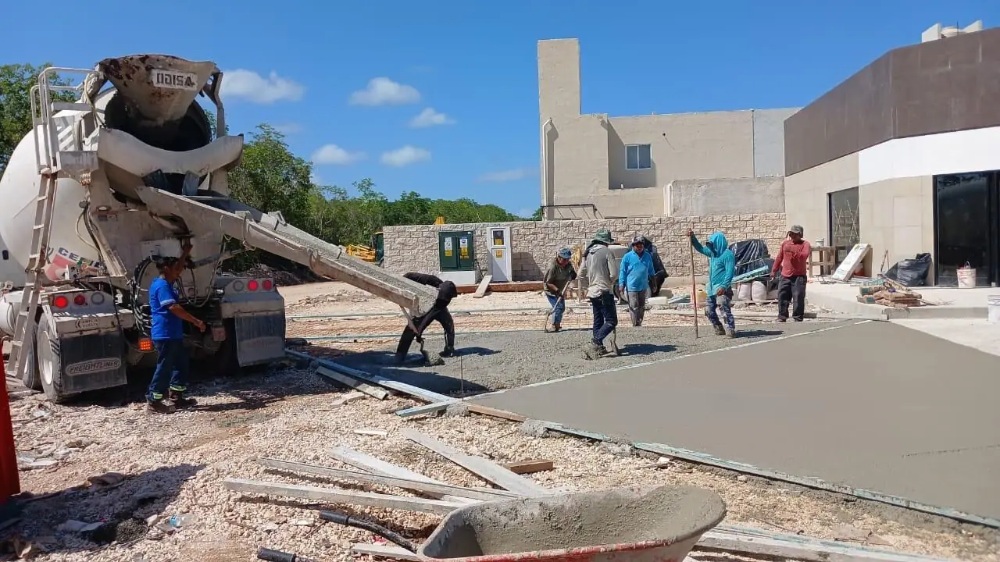

Baurecht in Mexiko: Was deutsche Bauherren wissen müssen (2026)
Wer aus Deutschland kommt, sucht in Mexiko nach der Landesbauordnung, dem Bebauungsplan und dem Prüfstatiker – und findet ein anderes System. Das mexikanische Baurecht ist stark kommunal, mit einem verantwortlichen Bauleiter statt Prüfingenieur und mit Umwelt- und Eigentumsfragen, die oft wichtiger sind als die Baugenehmigung selbst. Ein Überblick am Beispiel Quintana Roo.

Verwandte Seiten: Hausbau in Playa del Carmen · Baugenehmigungen an der Riviera Maya · Zonen-Check
Kein einheitliches Baugesetzbuch: Die Gemeinde entscheidet
Mexiko hat keine bundesweite Bauordnung im deutschen Sinn. Jede Gemeinde (municipio) hat ihr eigenes Reglamento de Construcción und ihr Programa de Desarrollo Urbano – vergleichbar mit Bauordnung und Bebauungsplan zugleich. In Quintana Roo heißt das: Cancún (Benito Juárez), Playa del Carmen (Solidaridad), Tulum, Puerto Morelos oder Bacalar haben jeweils eigene Regeln zu Dichte, Höhe, Abständen und Stellplätzen.
Die Nutzungsbescheinigung kommt vor dem Entwurf
Die Constancia de uso de suelo bestätigt, was auf einem Grundstück zulässig ist – Wohnen, Gewerbe, Hotel – und mit welcher Dichte. Sie ist das erste Dokument jeder Planung. Wer ohne sie zeichnet, riskiert einen Entwurf, den die Gemeinde nicht genehmigen kann.
Der DRO statt Prüfingenieur
Statt eines Prüfstatikers unterschreibt in Mexiko ein Director Responsable de Obra (DRO) – ein bei der Gemeinde registrierter Architekt oder Ingenieur, der für Planung und Ausführung haftet. Je nach Projekt kommen Co-Verantwortliche für Tragwerk oder Installationen hinzu. Der DRO ist Pflicht für die Baugenehmigung und begleitet den Bau bis zur Fertigstellungsanzeige.
Umweltrecht: oft der eigentliche Zeitfaktor
An der Küste und in sensiblen Gebieten ist die Umweltgenehmigung meist wichtiger als die Baugenehmigung:
- SEMARNAT (Bund) prüft Küste, Dünen, Mangroven, Cenoten und die Bundesmeeresuferzone – über eine Umweltverträglichkeitserklärung (MIA), die Monate dauern kann.
- SEMA (Bundesstaat Quintana Roo) prüft viele Inlandprojekte, inklusive Rodung und Pflanzenrettung.
- ZOFEMAT: Die ersten 20 Meter am Strand gehören dem Bund und werden nur per Konzession genutzt.
Eigentum: Fideicomiso, Gesellschaft und Ejido
In der Sperrzone – 50 km von der Küste, 100 km von der Grenze – erwerben Ausländer Grundstücke über einen Fideicomiso (Bank-Treuhand) oder eine mexikanische Gesellschaft. Viel Land im Inland ist Ejido-Land, das erst ins Volleigentum (dominio pleno) überführt und im Grundbuch eingetragen sein muss, bevor es sicher gekauft werden kann. Eine bloße Abtretung von Ejido-Rechten ist keine Eigentumsurkunde. Der Notar (notario público) spielt eine zentrale Rolle.
Der Bauvertrag: was hineingehört
- Leistungsverzeichnis mit Mengen und Einheitspreisen statt Pauschalbetrag ohne Aufschlüsselung.
- Zahlungen nach geprüftem Baufortschritt, nicht nach Kalender.
- Regeln für Nachträge: Jede Änderung wird vor der Ausführung bepreist und unterschrieben.
- Gewährleistung schriftlich, z. B. ein Jahr auf Ausbau und Installationen, fünf Jahre auf Tragwerk und Abdichtung.
- Wer welche Genehmigungen beantragt und bezahlt.
Deutschland und Mexiko im Vergleich
| Thema | Deutschland | Mexiko (Quintana Roo) |
|---|---|---|
| Bauordnung | Landesbauordnung | Reglamento de Construcción der Gemeinde |
| Bebauungsplan | B-Plan der Gemeinde | Programa de Desarrollo Urbano + uso de suelo |
| Prüfung | Prüfstatiker / Bauaufsicht | DRO und Co-Verantwortliche |
| Umwelt | meist im Verfahren integriert | eigenes Verfahren (SEMARNAT/SEMA), oft länger |
| Eigentum Ausländer | frei | Fideicomiso oder Gesellschaft in der Sperrzone |
| Strand | öffentlich/Landesrecht | Bundeszone ZOFEMAT, Konzession nötig |
Wie Recrea das für deutsche Bauherren löst
Wir prüfen Nutzung, Titel und Umweltlage vor dem Entwurf, arbeiten mit registriertem DRO, führen Umwelt- und Gemeindeverfahren parallel und berichten wöchentlich auf Deutsch. Für die Rechtslage einzelner Orte siehe auch Baugenehmigungen in Playa del Carmen, Tulum und Cancún.
Häufige Fragen
Bereit, Ihr Projekt zu starten?
196+ abgeschlossene Projekte. Festpreisverträge. Kostenloses Angebot in 48 Stunden.
Kostenloses Angebot